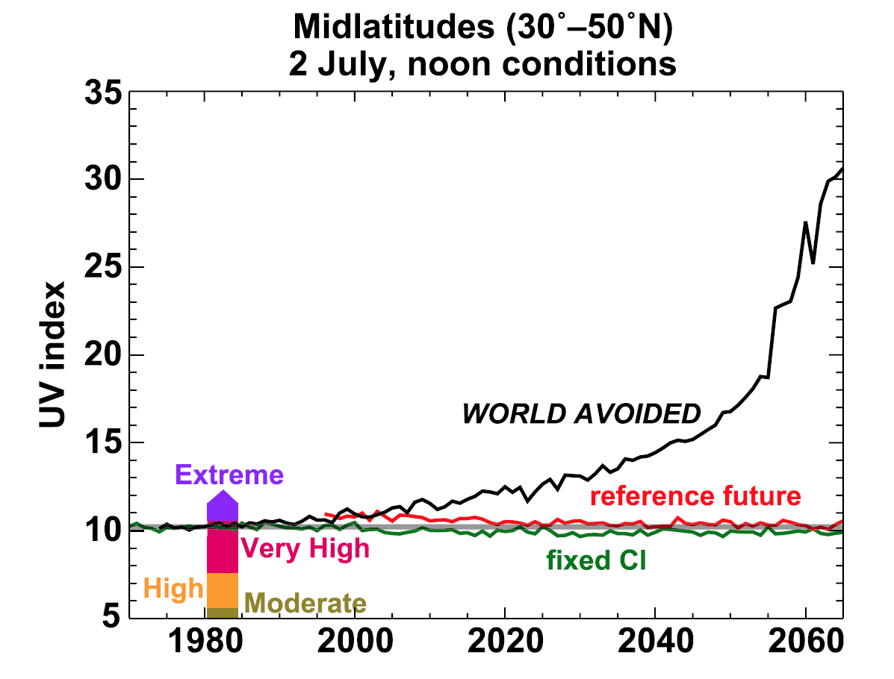
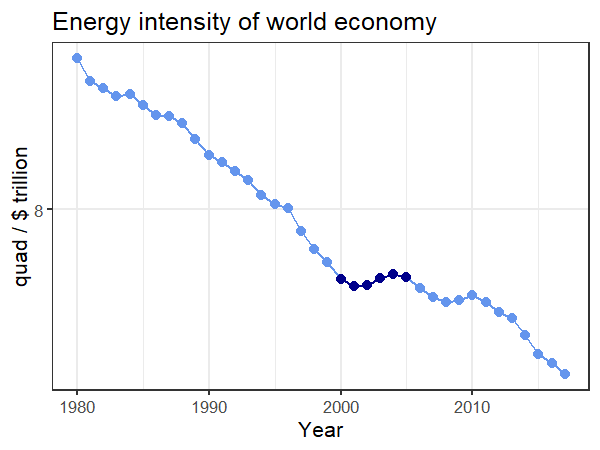

Policy Myths
and Options
EES 3310/5310
Global Climate Change
Jonathan Gilligan
Class #23: Monday Oct. 16 2018
PDF: https://ees3310.jgilligan.org/Slides/Class_23/EES_3310_5310_Class_23_Slides.pdf Navigate slides: next: N or <space>; previous: P or <backspace>
Also: up, down, left, right arrows; overview: o; help: ?
Pielke’s Lessons from
The Ozone Hole
Pielke’s Lessons from
the Ozone Hole
- 1970s: Significant scientific uncertainty
- Decision to take action without waiting for certainty
- Discovery of hole: tipping point
- “No regrets”" policy
- Flexible policy (renegotiate details every two years)
Success: Avoided Futures

Important Note:
- The ozone hole is completely different from global warming
- Caused by chemical reactions with chlorine atoms
- However:
- CFC chemicals that destroy ozone are also powerful greenhouse gases
- Ozone depletion is temperature-sensitive
- Hole over antarctica because of very cold stratosphere (much colder than arctic)
- Global warming cools stratosphere
- If we had not stopped production of CFC chemicals An ozone hole might have started over arctic too.
Policy Myths
Policy Myths
- We lack political will
- We must trade off the economy for the environment
- We have all the technology we need
Myth 1:
We Lack Political Will
Public Opinion:
Is the Earth Warming
http://climatecommunication.yale.edu/publications/climate-change-american-mind-march-2018/
Public Opinion:
Cause of Warming?
http://climatecommunication.yale.edu/publications/climate-change-american-mind-march-2018/
Variation across polls
Partisan Split
Partisan Split: Most Divisive Issue
Do you worry a lot about …?
| Democrat | Republican | D − R | |
|---|---|---|---|
| Global warming | 66% | 18% | +48% |
| Race relations | 59% | 29% | +30% |
| Illegal immigration | 26% | 54% | −28% |
| Healthcare | 67% | 48% | +19% |
| Terrorism | 35% | 52% | −17% |
| Federal spending/deficit | 44% | 54% | −10% |
| Crime & violence | 45% | 53% | −8% |
| The economy | 50% | 42% | +8% |
Gallup, Mar 1-5, 2017
http://news.gallup.com/poll/206513/democrats-drive-rise-concern-global-warming.aspx
Partisan split
http://news.gallup.com/poll/161714/republican-skepticism-global-warming-eases.aspx
http://news.gallup.com/poll/190010/concern-global-warming-eight-year-high.aspx
Polarization in Congress 1970–2015
Partisan split: Do you trust science?
(not just on environment)
Myth 2:
We must trade off the economy
for the environment
Willingness to pay (2009)
The Economist, Jul 1, 2009. http://media.economist.com/media/pdf/Tabs20090701.pdf
Iron Law of Climate Policy
- People want action on global warming
- But if climate policies conflict with economic growth, growth will win every time.
Frank Luntz (2010)
What has changed is that the American economy went to hell. And when you ask voters are they more concerned about destroying their environment over the next 100 years or rehabilitating their economy over the next 100 weeks, they’ll choose the economy over the environment any day.
“Candidates Take Aim At Climate Bill To Win Votes” All Things Considered, NPR, 28 Oct. 2010
https://www.npr.org/templates/story/story.php?storyId=130888515
James Inhofe (2016)
I assumed like everybody else, way back when everyone was talking about global warming and all that, I assumed that that was probably right, until I found out what it was going to cost
Heritage Foundation Energy & Climate Policy Summit, Dec. 8, 2016
https://www.youtube.com/watch?v=surP84BQwhc
New Data (2017)
- Public support for carbon tax:
- Majority support $177 per year (~50 cents/day)
- Strong support for using the money to:
- Support clean energy (80%)
- Improve infrastructure (80%)
- Compensate displaced coal miners (70%)
- Majority would give each coal miner $146,000.
- Reduce income taxes (60%)
- This is still in line with Pielke’s Iron Law
- Majority only willing to pay $0.50/day
Public Opinion on Priorities (2015)

Public Support for Policies (2017)
Political Will
Political Will
-
Walter Lippmann (Pielke’s paraphrase):
The goal of politics is not to get everyone to think alike, but to get people who think differently to act alike
-
Cass Sunstein
people can often agree on constitutional practices, and even on constitutional rights, when they cannot agree on constitutional theories
…
a major goal of a heterogeneous society [is] to make it possible to obtain agreement where agreement is necessary, and to make it unnecessary to obtain agreement where agreement is impossible.
Myth 3:
We have all
the technology we need.
Do we have the technology?
Do we have the technology?
- Blue = Assumed spontaneous emissions reduction
- Brown = Regulations
- Yellow = Allowed emissions to stabilize CO2 at 550 ppm.
R.A. Pielke, Jr. et al., Nature 452, 531 (2008).
Optimism on energy efficiency
R.A. Pielke, Jr. et al., Nature 452, 531 (2008).
The View from 2018:
- Pielke’s numbers focus on 2000–2005
- The years when China’s economy began really rapid growth
- After 2005, things changed:

Current Emissions Pathways
- Comparing actual trends for 2005–2017 to trends for 2005–2020 in 5 emissions scenarios:
- Points above the magenta line have higher emission trends than historical
- Points below the magenta line have lower emission trends than historical
- The historical trend from 2005–2017 is doing better (lower emissions) than several scenarios including baseline (no policies) and RCP 6.0 (business as usual with current policies).